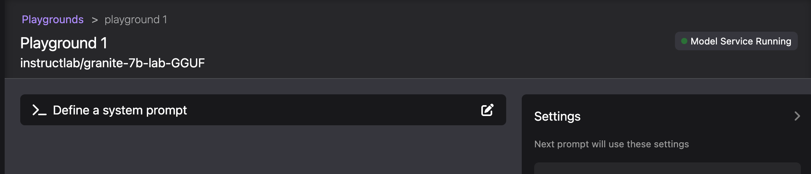

AI Lab Playground
GizmoGobble team on AI Lab Playground
The integrated Playground environment allows for experimenting with available models in a local environment. An intuitive user interface helps in exploring the capabilities and accuracy of various models while aiding in finding the best model for the use case at hand.
The playground is about experimentation and learning. While it may seem like random and non-essential learning, the playground is where ideas, theories, and hypotheses are tested to determine how base AI models respond to prompt scenarios, system messages, parameter turning to discover which models perform best.
Starting a Playground Environment
From the AI Lab navigation menu:
-
Select Playgrounds.
-
Select the New Playground button at the top right.
-
Optionally, give the playground a unique name.
-
Select a model from the Models dropdown (only downloaded models will be populated in the list).
-
Click the Create Playground button to begin.
This will deploy:
-
a new Model Service for the selected AI Model, which exposes the AI Model via an inference endpoint API.
-
a new ai-lab-playground-chat container that provides a visual user interface to allow interaction with the Model service. This container can be viewed from the Podman Desktop containers dashboard.
Verify Resources are Running
-
Click on the Playground, and from the Playground Environments dashboard, you should see one running playground denoted by a green icon next to the playground name you selected. If you left the name field blank, it will display as "playground1."
-
Click on the playground to open the environment. Check the right hand side of the bar at the top to ensure that there is a model service running, indicated by a green dot.
-
If the green dot is present, you can continue. If not, address the error in step 3.

-
-
Next, select the Services menu and verify that there is now a service with a green indicator, showing that the service is running. We’ll learn more on services in the next section.
-
If no service is shown, wait a bit longer, as the first service may take a minute or so to create.
-
-
Return to the Playground menu, and once again select the Playground you deployed to open the environment.
| We can deploy multiple playgrounds utilizing a single model inference service. This allows testing of various iterations of experiments occurring simultaneously while conserving resources usage. |
Exploring the Playground
Define a System Prompt
While setting the default system prompt is optional, it’s important to tune the AI model towards providing accurate responses for a specific use case.
System prompts are a set of instructions, guidelines, and contextual information provided to AI models before they engage with user queries. These prompts act as a framework, setting the stage for the AI to operate within specific parameters and generate responses that are coherent, relevant, and aligned with the desired outcome. System prompts play a pivotal role in bridging the gap between the vast knowledge acquired by AI models during training and their application in real-world scenarios.
Gizmo Gobble’s example system prompts:
-
You are a helpful, respectful and honest assistant. Always be as helpful as possible, while being safe. Your answers should not include any harmful, unethical, racist, sexist, toxic, dangerous, or illegal content. Please ensure that your responses are socially unbiased and positive in nature. If a question does not make any sense, or is not factually coherent, explain why instead of answering something that is not correct. If you don’t know the answer to a question, please don’t share false information.
-
You are a fantastic story teller injecting humor and entertainment into every answer.
-
You are a helpful, respectful and honest Master Chef with years of experience in the Culinary Arts. You are familiar with various types of cooking utensils and can recommend the best one for the task at hand.
The system prompt is where we can ask the AI to assume some personality or role, and act as that type of persona, while also adding guidelines and rules for which the AI’s responses adhere to.
Model Parameters
On the right side of the Playground Console is a Settings widget, with the message next prompt will use these settings. The Playground allows you to tune the model’s behavior through several configuration parameters.
There are three Model Parameters that can be adjusted from this sub-menu:
-
Temperature: Controls the randomness of responses. Lower values are more focused, and higher values are more creative. Accepts values between 0 and 2. Higher values like 0.8 will make the output more random, while lower values like 0.2 will make it more focused and deterministic.
-
Max Tokens: Sets the maximum length of the model’s output, influencing verbosity and resource consumption. Accepts values between -1 and 32768 tokens. This is also known as the context window length, context window, context length, or maximum sequence length.
-
Setting the limit of input tokens is not an option at this time.
-
-
Top-p: Adjusts the balance between relevance and diversity in word choices. Accepts values between 0 and 1. This is an alternative to sampling with temperature, where the model considers the results of the tokens with the top_p probability mass. So, 0.1 means only the tokens comprising the top 10% probability mass are considered, while higher values like 0.8 increase word selection diversity.
Experiment with these settings interactively to find the optimal configuration for your use case. You’ll notice that there are tradeoffs between predictability and creativity, as well as conciseness and comprehensiveness.
LAB
Interact with the Playground
-
Provision a new playground environment using the instructlab/granite-7b-lab-GGUF model.
-
Set a system prompt and evaluate the various responses.
-
Use a system prompt that instructs the model to answer as a comedian, a scholar, or in GG’s use case: a master chef who knows all things about cooking and utensils.
-
Evaluate the results of responses for each type of system prompt
-
-
Change the model parameter settings and evaluate response actions.
-
Set the #(limit) of max tokens to 30. Ask a question that requires a more detailed response like: " Why is the Sky Blue?" and evalute what happens. While this number is exceptionally low, limiting the number of tokens can reduce the cost and prevent random questions from resource consumption.
-
Change the temperature setting to a number close to 2 such as 1.8 and ask an open question like "Tell me a story". Evaluate the response, then set the value lower near 0.5 and ask for a new story. Note down the following: Which was more original or unique?, Which made more sense?, and Which did you prefer?.
-
The top_p setting is similar to temperature, but increases the vocabulary of the model’s responses. Change the temperature to 1.9, and the top-p to 1.0. Give this a try and find out what the results are. This should yield a response with words that are less frequently heard in the English language.
-
We use the Playground to experiment with various settings, when quering AI models with various prompts. Now let’s head over to the Model Serving dashboard to learn more about integrating our AI Models with existing or new applications.
| Removing the playground environment does not automatically remove the Model Service that was created. |